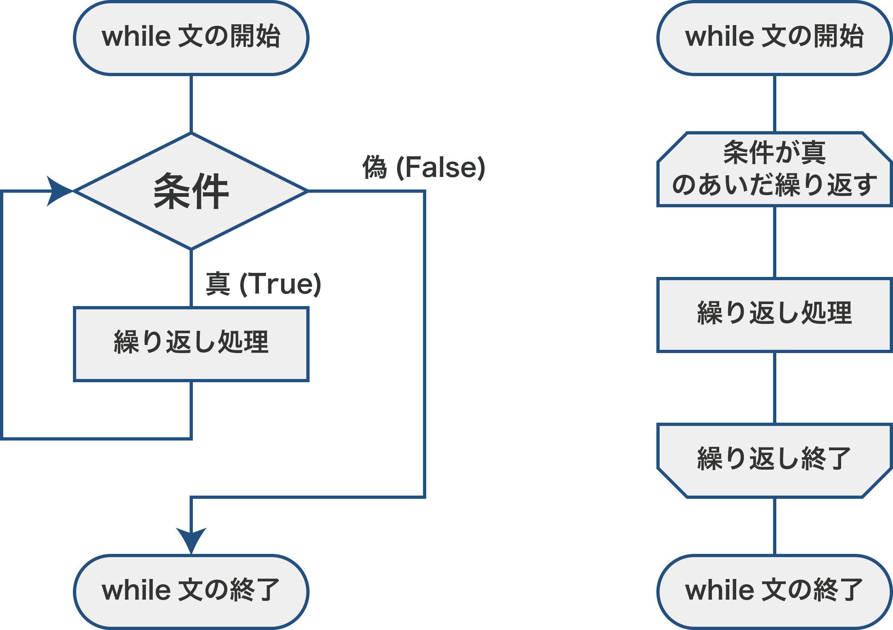

(1) while文の書き方
while文とは
何度も同じ処理を繰り返したいときは、while文を使います。while文は指定した条件を満たしているあいだ処理を繰り返す構文です。

※左右のフローチャートは同じ内容を異なる方法で書いています。
while文は次のように書きます。if文と同様に、whileの文末にはコロン:をつけ、繰り返し処理は次の行からインデントを１つ文下げて書きます。
while 条件式:
# 繰り返しの処理
while文の例（ループ変数）
while文で指定回数繰り返す場合には、次のように繰り返し回数を数える変数（ループ変数）を用いて書きます。ループ変数は、while文の前に初期値を指定しておきます。
i = 1
while i <= 指定回数:
# 繰り返しの処理
i = i + 1
次のコードは、変数iが1から5未満のあいだ繰り返し処理の回数を表示する例です。
i <= 5のあいだwhile文の中を繰り返します。while文の最後にはi = i + 1でiの値を１つ大きくします。
i = 1
while i <= 5:
print(i, end=" ") # ※1
i = i + 1
1 2 3 4 5- print("...", end=" ")
print関数の引数にend="..."を指定すると、末尾に出力する文字を指定することができます。何も指定しなければ（デフォルトでは）改行コード（\n）となりますが、上の例のように半角スペースを指定すると、改行せずに半角スペースが出力されます。c.f. 1-2. 変数と画面出力 (5)print関数の使い方 末尾文字の設定
while文の例（繰り返し条件①）
次のコードは、100以上の整数のうち19で割り切れる最小の整数を求めるプログラムです。
nを100からはじめ、1つずつ大きくしていき、19で割り切れるときにループを終了します（19で割り切れないあいだ繰り返します）。
n = 100
while n % 19 != 0: # 19で割って余りが0ではないあいだ繰り返す
n = n + 1 # nに1つ大きくする
print(n) # インデントレベルが戻っているので、while文が終了している
114while文の例（繰り返し条件②）
次のコードは、nが0になるまで（nが0より大きいあいだ）、nを2で割った余りを出力し、nにnを2で整数除算した値を代入します。整数除算とは、整数の範囲で割り算をして、商の部分を求めます。例えば、15 // 2 = 7となります。
n = 25
while n > 0:
print(n % 2)
n = n // 2
1
0
0
1
1
最後は、1 // 2 = 0となり、ループが終了します。
無限ループ
いつまでも条件を満たしてしまう場合、処理が終了できません。このような状態を無限ループといいます。while文でループをする場合には、終了できるような条件設定をしましょう。
例えば、ループ変数を増やしていないなどの原因が多いです。
万が一、無限ループになってしまった場合には、実行停止ボタンを押しましょう。